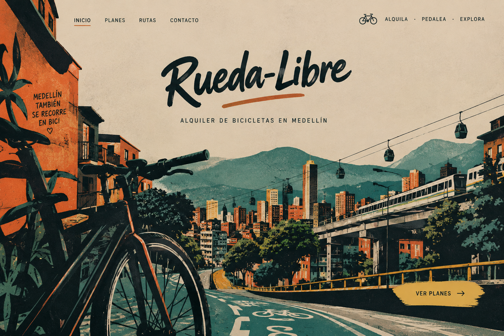

En Rueda Libre queremos que descubras Medellín de una manera diferente:
sobre dos ruedas, disfrutando de sus paisajes, sus calles y sus espacios urbanos.
Ofrecemos alquiler de bicicletas, recorridos guiados y talleres básicos para
que vivas una experiencia cómoda, activa y cercana a la ciudad. Encuéntranos
Somos un proyecto que promueve el uso de la bicicleta como una forma de movilidad sostenible y una manera diferente de conocer Medellín.

Alquila una bicicleta para recorrer Medellín a tu propio ritmo. El servicio incluye casco y candado para tu recorrido. Descubre la ciudad de una manera diferente.
Conoce los lugares más interesantes de Medellín acompañado por un guía. Recibirás orientación durante el recorrido. Una experiencia para disfrutar y aprender sobre la ciudad.
Aprende sobre el cuidado y el mantenimiento básico de tu bicicleta. Conoce las herramientas y revisiones esenciales. Adquiere conocimientos útiles para tus recorridos.

Explora Medellín sobre dos ruedas.Consulta el mapa de Medellín
¿Tienes preguntas? Escríbenos por correo